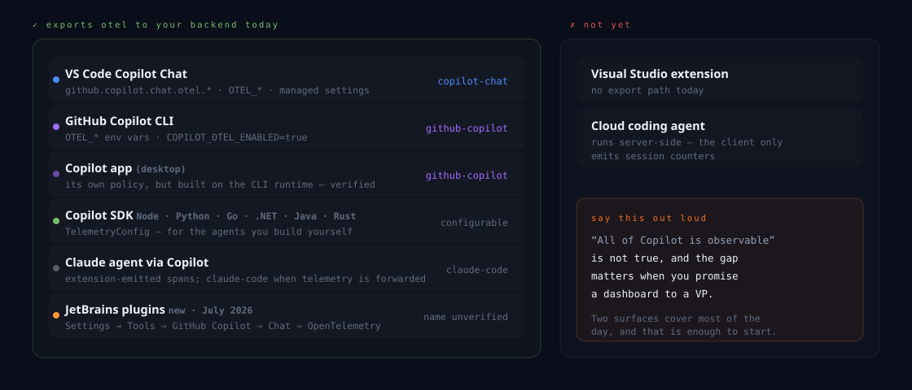
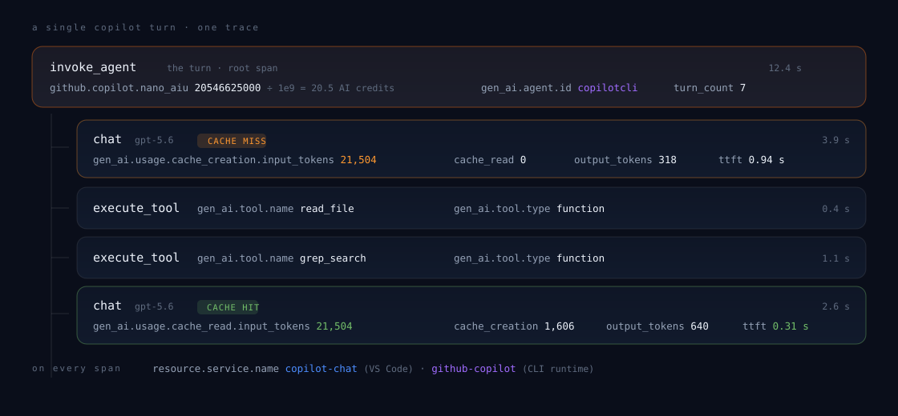
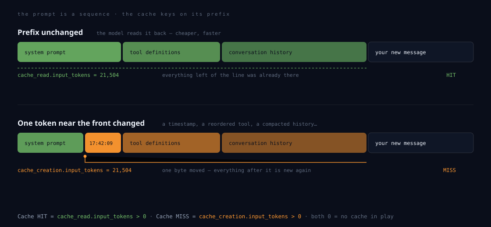
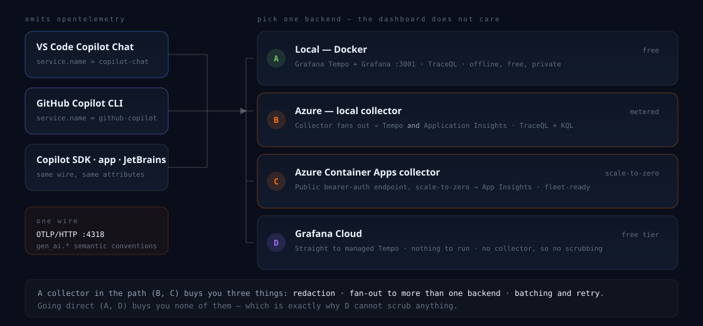
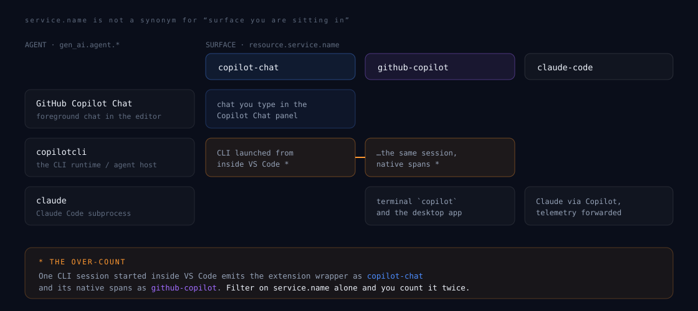
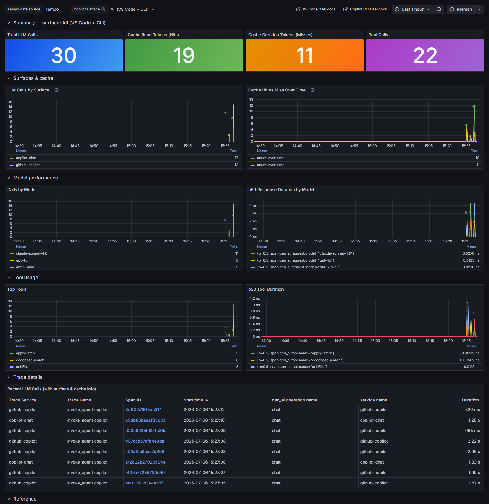
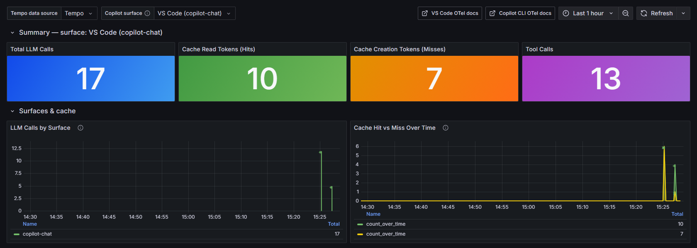
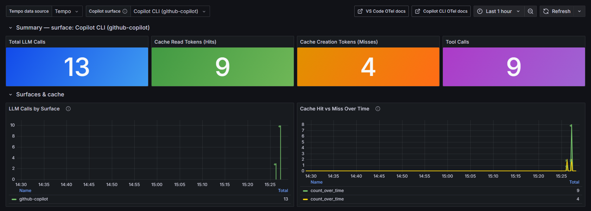
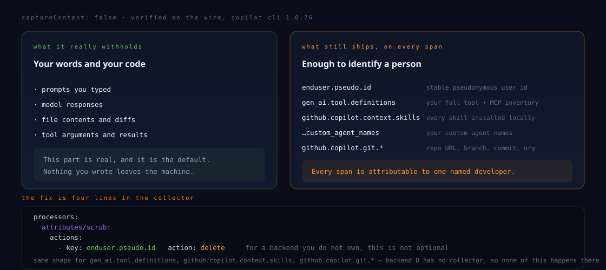
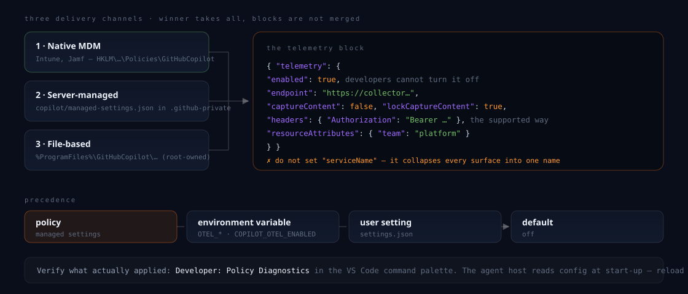

Your AI pair programmer is a distributed system. It has been emitting OpenTelemetry this whole time.
Not roughly. The actual number your last turn sent to the model.
In credits. For that one turn. On that one repo.
Or did you pay full price to re-send a prompt the model had already seen?
Traces. RED metrics. Structured logs. An on-call rotation. A dashboard someone actually looks at. Alerts that page a human at 3 a.m.
No traces, no baseline, no record of which model ran or what it spent. When it degrades you find out on Slack, from a colleague, in a shrug.
A planner that calls a model. A model that calls tools. Tools that call your file system, your shell, an MCP server two networks away. Retries, timeouts, a cache, and a bill. You have instrumented this exact shape a hundred times.
No SDK to install. No agent to inject. No proxy. Copilot speaks OTLP natively — you just tell it where to send it.
{
"github.copilot.chat.otel.enabled": true,
"github.copilot.chat.otel.exporterType": "otlp-http",
"github.copilot.chat.otel.otlpEndpoint": "http://localhost:4318",
"github.copilot.chat.otel.captureContent": false
}
setx COPILOT_OTEL_ENABLED "true" setx OTEL_EXPORTER_OTLP_ENDPOINT "http://localhost:4318" # Leave OTEL_SERVICE_NAME unset. That single omission # is what keeps VS Code and the CLI apart on the board.



It is the closest thing Copilot has to a health metric — and it moves before anyone complains.
A high hit rate is a proxy for a well-behaved system prompt, a stable tool inventory, and sessions that aren’t thrashing their context window.
Cached input bills at a fraction of fresh input. Hit rate falls today; the finance conversation happens next month.
A hit shaves most of the time-to-first-token. "Copilot feels sluggish" is usually a hit-rate chart nobody was looking at.



All / VS Code / Copilot CLI. Every panel below re-queries.


| attribute | what it gives you |
|---|---|
| github.copilot.nano_aiu | AI units × 10⁻⁹ — divide by 1e9 for the credits figure the CLI prints |
| github.copilot.cost | Request cost as reported by the service |
| github.copilot.server_duration | Server-side ms, versus the span’s wall clock |
| gen_ai.response.time_to_first_chunk | TTFT in seconds, streaming |
| github.copilot.turn_count | LLM round trips in the session |
Grafana unit si:nAIU — an SI nano prefix on a custom AIU unit — rescales 21758500000 to 21.8 AIU with no transformation at all.


docker compose up -d, paste four settings, use Copilot normally for an hour, open localhost:3001. Nothing leaves your laptop. No cloud account, no approval, no meeting.
Sort by cache_creation.input_tokens. Look for a repeating high value — that’s your volatile token. Overlay the session.* events to see whether it’s compaction or something you wrote.
Put a collector in the path, drop enduser.pseudo.id, and roll it out with managed settings — with a baseline you can point at, and an answer ready for “are you watching me?”
| trap | what happens · what to do |
|---|---|
| Traces-only pipeline | Copilot emits metrics and logs too. No metrics: pipeline in your collector and they’re silently dropped. Tempo can’t store metrics at all. |
| Protocol mismatch | The CLI defaults to http/json, VS Code to http/protobuf. Grafana Cloud’s gateway wants protobuf — set it explicitly. |
| OTEL_SERVICE_NAME | Set it and both surfaces collapse into one name. Leave it alone. |
| Managed headers | Delivered to the Chat extension exporter only, never the agent host — deliberately, to keep tokens out of subprocesses. An in-network collector side-steps it. |
| Workspace settings | Use User settings. A committed workspace setting points your teammates’ telemetry at your endpoint. |
| Reload | The agent host reads config at start-up. Changed a setting and see nothing? Reload the window before you debug anything else. |
It has been telling us the whole time — tokens, cost, latency, every cache miss and the reason for it. Four settings and a docker compose. Then it stops being a feeling and starts being a number.
Docker Compose for the local stack, both collector configs, Azure provisioning scripts, and the two dashboards — TraceQL for Tempo, KQL for Azure Monitor. MIT licensed.
| OTel GenAI semantic conventions | opentelemetry.io |
| Monitor agent usage with OpenTelemetry | VS Code docs |
| Copilot CLI — OpenTelemetry monitoring | docs.github.com |
| Enterprise-managed OTel export | github.blog changelog |
Questions — and I’d genuinely like to hear what your hit rate turns out to be.